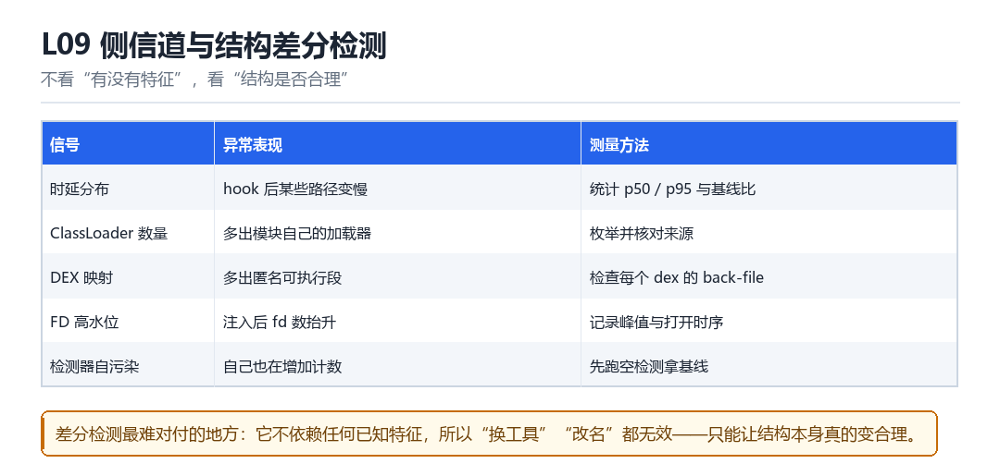

L09
侧信道与结构差分检测
时延分布、ClassLoader 数量、DEX 映射、FD 高水位、检测器自污染
不看“有没有特征”，看“结构是否合理”。

9.1 五类信号
| 信号 | 异常表现 | 测量方法 |
|---|---|---|
| 时延分布 | 某些路径变慢 | 统计 p50 / p95 与基线比 |
| ClassLoader 数量 | 多出模块加载器 | 枚举并核对来源 |
| DEX 映射 | 多出匿名可执行段 | 检查每个 dex 的 back-file |
| FD 高水位 | 注入后 fd 数抬升 | 记录峰值与时序 |
| 检测器自污染 | 自己也在增加计数 | 先跑空检测拿基线 |
9.2 为什么它难对付
因为它不依赖任何已知特征。换工具、改名字、抹字符串，全都无效。唯一的对策是让结构真的变合理——这就是 F11 与本章的共同结论。
9.3 一个可以落地的差分脚本
采集基线并比较
def sample():
return {
'threads': len(os.listdir('/proc/self/task')),
'fds': len(os.listdir('/proc/self/fd')),
'maps': sum(1 for _ in open('/proc/self/maps')),
}
base = sample() # 干净环境采一次，存起来
now = sample()
delta = {k: now[k] - base[k] for k in base}9.10 本章自测
- 五类信号里，哪一个最难伪造？
- 为什么侧信道检测不依赖特征？
- 基线为什么必须同版本？
- 如果检测方用了差分，你会怎么应对？
9.5 深入：时延分布怎么采才可靠
单次测量噪声太大。可靠的做法是采多次、取分位数、并且在同一设备同一版本上采基线。跨设备比较是没有意义的——不同 SoC 的性能差异远大于 hook 带来的开销。
采集与判断
def measure(fn, n=200):
ts = []
for _ in range(n):
t0 = time.perf_counter_ns(); fn(); ts.append(time.perf_counter_ns()-t0)
ts.sort()
return ts[n//2], ts[int(n*0.95)]9.6 实战：检测器自污染的三个来源
- SDK 自己建的线程：初始化时就多出几个线程。
- SDK 自己打开的 fd：日志文件、socket、配置文件。
- SDK 自己的内存映射：加载 so、dex、资源。
9.7 原理推演：为什么“侧信道”无法被特征匹配打败
因为侧信道测的是“统计性质”，不是“具体特征”。你改了名字、删了字符串、换了实现，但“线程多了 7 个”这件事仍然存在。要消除它，只能真的把线程数降下来。
| 检测类型 | 对抗方式 | 能否靠改名绕过 |
|---|---|---|
| 特征匹配 | 改名 / 加密 | 能 |
| 侧信道 | 改变结构 | 不能 |
这就是为什么“结构合理性”是最终的战场。
9.8 数据细节：三类统计量的稳定性
| 统计量 | 跨设备稳定性 | 跨版本稳定性 |
|---|---|---|
| 线程数 | 中 | 中 |
| FD 数 | 低 | 中 |
| maps 条目数 | 低 | 低 |
| 耗时分布 | 低（需同机型） | 中 |
结论：跨设备比较几乎没有意义。所有统计量都必须“同机型 + 同版本”才有可比性。
9.9 深入：ClassLoader 数量为什么是强信号
因为正常 App 的加载器数量是“可预期的”：一个 App 加载器，加上若干插件/热修复的加载器。突然多出一个“来源不明”的加载器，且它的 dexPath 指向私有目录，就非常可疑。
| App 类型 | 正常加载器数 | 注入后 |
|---|---|---|
| 简单 App | 1~2 | +1 |
| 插件化 App | 3~5 | +1（难分辨） |
| 加固 App | 5+ | +1（更难分辨） |
所以在“插件化/加固”的 App 上，这条信号的区分度会下降——必须结合“来源路径”一起看。
9.12 深入：DEX 映射的 back-file 检查
检查每个 dex 的来源
// 遍历 maps 里所有可执行/可读的匿名段
// 对每个段，尝试在 /proc/self/map_files 找它的 back-file
// 找不到 back-file 且大小接近 dex 的，可疑9.11 实战：把五项信号做成一张评分表
| 信号 | 权重 | 阈值 |
|---|---|---|
| 时延偏离 | 20 | p95 > 基线 1.5x |
| 加载器数 | 20 | > 基线 +1 |
| DEX 匿名映射 | 30 | > 基线 +1 |
| FD 高水位 | 10 | > 基线 20% |
| 线程数 | 20 | > 基线 p99 |